Ranch Simulator
Retour aux Aventures en cours
La Guilde quitte les champs de bataille pour remettre sur pied un vieux ranch et bâtir une nouvelle vie au cœur de la campagne.
📜 Informations de l'expédition
Origine : Le Mercredi Chaos ☠️
Statut : En expédition ⚔️
📅 Début : Juin 2026
🎮 Type : Simulation / Gestion / Construction
👥 Participants : Mk, Elfyre
📖 Histoire de l'aventure
Un vieux ranch familial a besoin d’une nouvelle vie.
Entre bâtiments à restaurer, terres à exploiter et animaux à élever, la Guilde devra transformer cette propriété abandonnée en une véritable exploitation prospère.
Il faudra gérer les ressources, développer le ranch et prendre soin de chaque animal pour faire grandir l’exploitation et assurer son avenir.
🎯 Objectifs de l'expédition
- 🏚️ Restaurer le ranch
- 🐄 Développer l'élevage
- 💰 Faire grandir le ranch
🎬 Souvenirs de l'expédition
Retrouvez les chroniques de cette aventure.